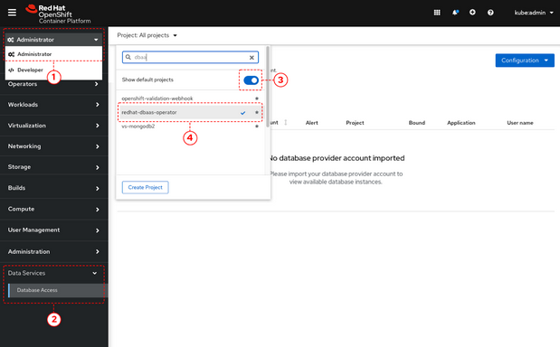
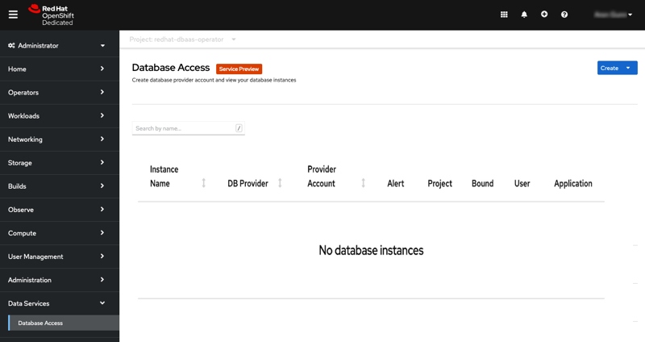
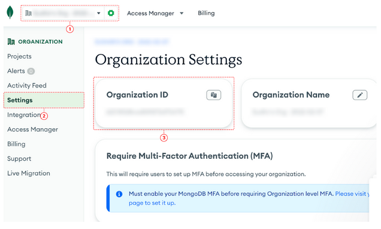
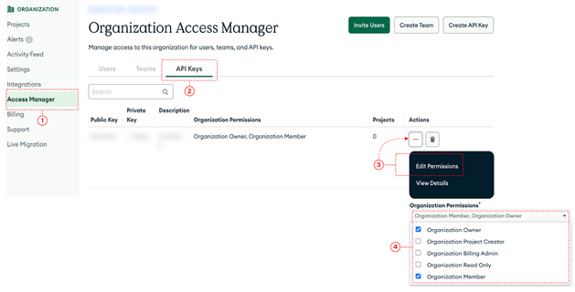
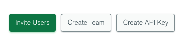
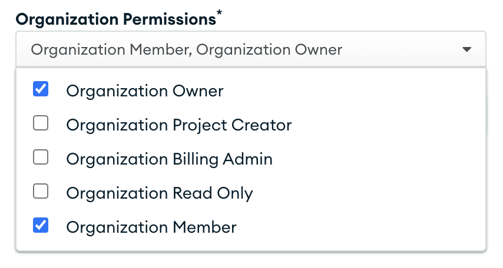
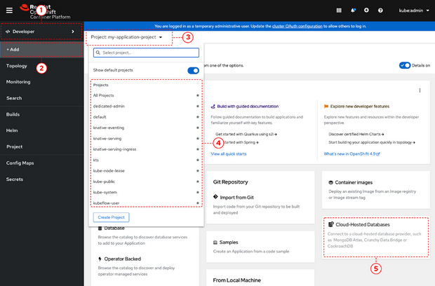

Connecting Pacman to MongoDB Atlas
In this section we will deploy and connect to a MongoDB Atlas Cloud Database where the
pacman application will store information such as high scores and user stats.
Prerequisites
-
A Red Hat user account to access the Red Hat Hybrid Cloud Console.
-
An instance of OpenShift Container Platform (OCP) 4.9 or higher running on Red Hat OpenShift Dedicated (OSD), or Red Hat OpenShift Service on AWS (ROSA).
-
When using OSD or ROSA, an Amazon Web Services (AWS) account and credentials are required.
-
-
Access to the OpenShift Cluster Manager (OCM) console.
-
A service account with either the MongoDB Atlas, or Crunchy Data Bridge, or CockroachDB cloud database provider.
-
An existing database instance running on one of these cloud database providers: MongoDB Atlas, Crunchy Data Bridge, or CockroachDB.
In order to run the lab in your cluster, you need to meet the requirements discussed below.
| Component | Version |
|---|---|
|
Exercise : Accessing the database access menu for configuring and monitoring
You can access the Red Hat OpenShift Database Access page from the OpenShift console navigation menu to select the correct project namespace for importing a cloud-database provider account.
|
If using MongoDB Atlas as a cloud-database provider, then you must add the IP address of the application pod to MongoDB Atlas' IP Access List.
If the IP address is not in the IP Access List, then a |
-
A service account with either the MongoDB Atlas, or Crunchy Data Bridge, or CockroachDB cloud database provider.
-
Procedure
-
Log into the OpenShift console.
-
To select the correct project namespace follow these sub-steps.
-
Select the Administrator perspective .
-
Expand the Data Services navigation menu, and click Database Access .
You might need to scroll down the navigation menu.
-
-
Click the Project dropdown menu and then enable the Show default projects switch .
-
Type dbaas in the search field.
-
Select redhat-dbaas-operator or openshift-dbaas-operator project namespace .
From the database inventory page you can monitor the database environment, import cloud-hosted database provider accounts, or create new database instances.

Exercise: Find your MongoDB Atlas account credentials
You need the Organization ID, the Organization Public Key, and the Organization Private Key to create a provider account resource for MongoDB Atlas.
|
If using MongoDB Atlas as a cloud-database provider, then you must add the IP address of the application pod to MongoDB Atlas' IP Access List. If the IP address is not in the IP Access List, then a 504 gateway timeout error occurs. Visit the MongoDB Atlas website for more details on adding an IP address to your database project. |
Procedure
-
From the MongoDB Atlas home page, Sign In to your account.
-
From your account home page:
 -
Select Organization from the dropdown menu .
-
Click Settings from the Organization navigation menu .
-
Copy the Organization ID value .
In some cases your organization ID may be hidden by default. -
Next, from the account home page:

-
-
-
Click Access Manager from the Organization navigation menu .
-
Click API Keys .
-
If you have existing API keys, you can find them listed here. Copy the API public and private keys for the import provider account fields. Also, verify that your API keys have the Organization Owner and Organization Member permissions .
-
-
If you need new API keys, click Create API Key, and proceed to the next step.
-
On the Create API Key page, enter a Description, and under the Organization Permissions dropdown box select the Organization Owner and Organization Member permissions. Click Next.

-
-
Copy the API public and private keys for the import provider account fields.
View Provider Accounter in the Console
Exercise: Accessing the developer workspace and adding a database instance
-
Log into the OpenShift console.
-
Access the developer workspace, and select or create your project, then select a cloud-hosted database provider to add to your project:
 -
Select the Developer perspective .
-
Click +Add .
-
Click the Project dropdown menu .
-
Create a new project or search for your application’s project .
-
Select the Cloud-Hosted Databases tile to connect to a cloud-database provider .
-
Select your cloud-hosted database provider tile.
-
Click Add to Topology.
-
Select a previously configured Provider Account for this database instance from the dropdown menu.
-
Select the database instance ID you want to use, and then click Add to Topology.
-
Click Continue. Upon a successful connection, you are taken to the Topology page.
-
In the Developer Perspective, click add and select connect database from the list of available options on each cluster.
-
Once above step is performed, you would be able to see as shown below in developer perspective
-
Finally, to connect application to the database, we need to create a service binding by doing a drag and drop from the application to the connected database which will prompt a message as shown below
-
After successfully creating the service binding application will be connected to the database
Exercise: Play Pacman and save your high scores
To play Pacman, please click on the URL : Pacman Game